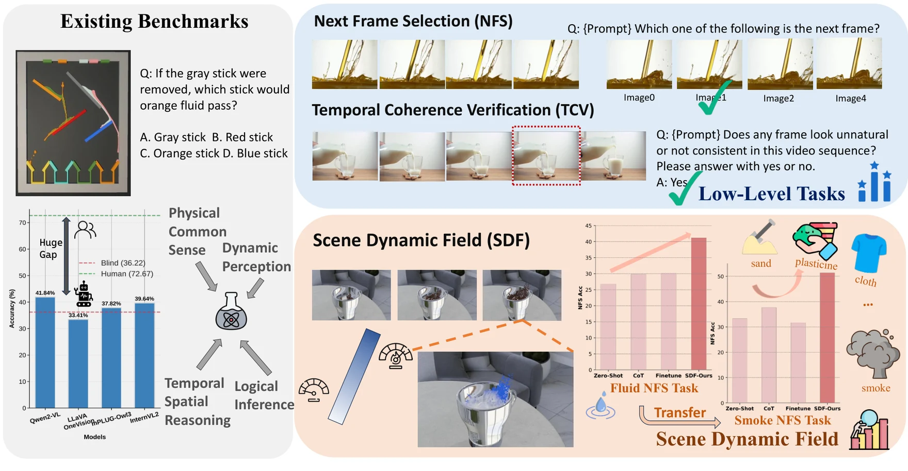
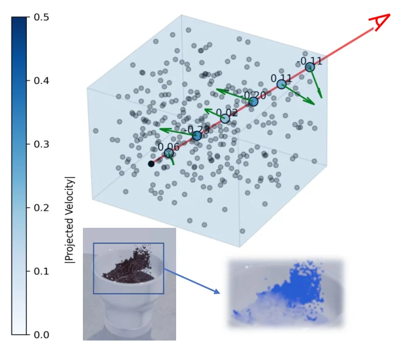
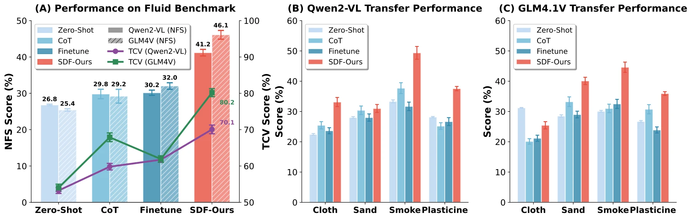

Beyond Static Vision: Scene Dynamic Field Unlocks Intuitive Physics Understanding in Multi-modal Large Language Models
ICLR 2026 · Shanghai Jiao Tong University · Tianjin University · Shanghai Innovation Institute
Two tests of physical dynamics
Next Frame Selection
Choose the frame that actually follows the observed video sequence.
Temporal Coherence Verification
Decide whether a video sequence contains a frame that disrupts the motion.

Scene Dynamic Field
The method renders the motion of simulated liquid particles as an image cue. Color intensity encodes particle speed, with a stronger contribution from particles closer to the camera.
Models are fine-tuned on three tasks: recognizing the motion cues, using them to reason about the next frame, and answering the original benchmarks. The tests include real footage and physical phenomena absent from the fluid training set.


Benchmark and transfer results
Takeaway On fluid next-frame selection, GLM4.1V improved from 25.4% to 46.1% accuracy after SDF training, a gain of 20.7 percentage points. Qwen2-VL rose from 26.8% to 41.2%.
